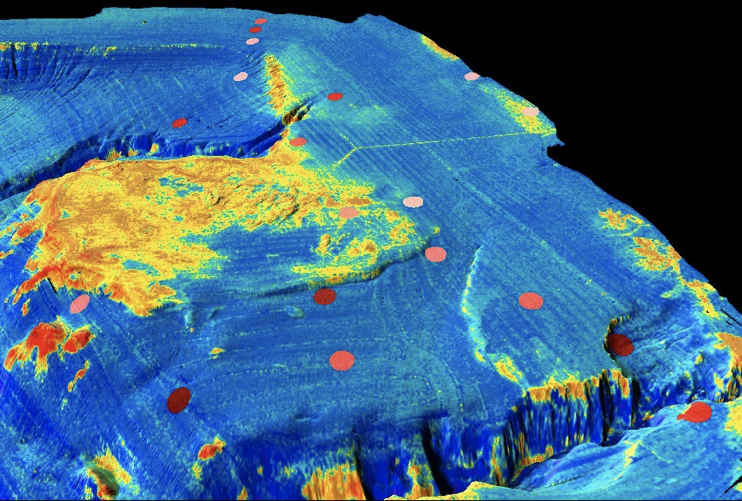
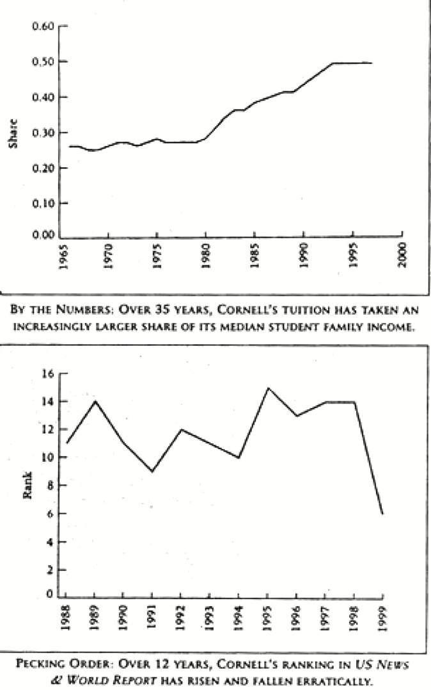
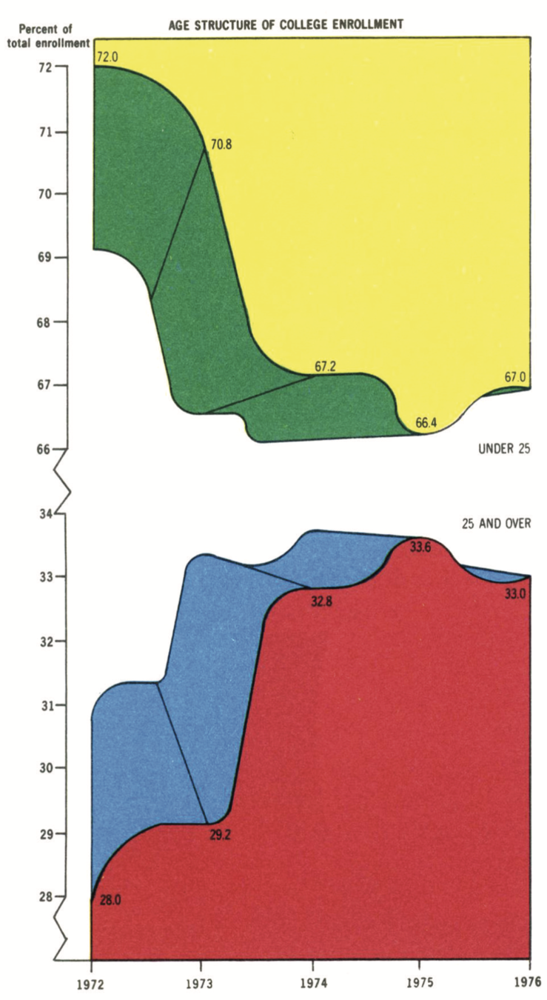
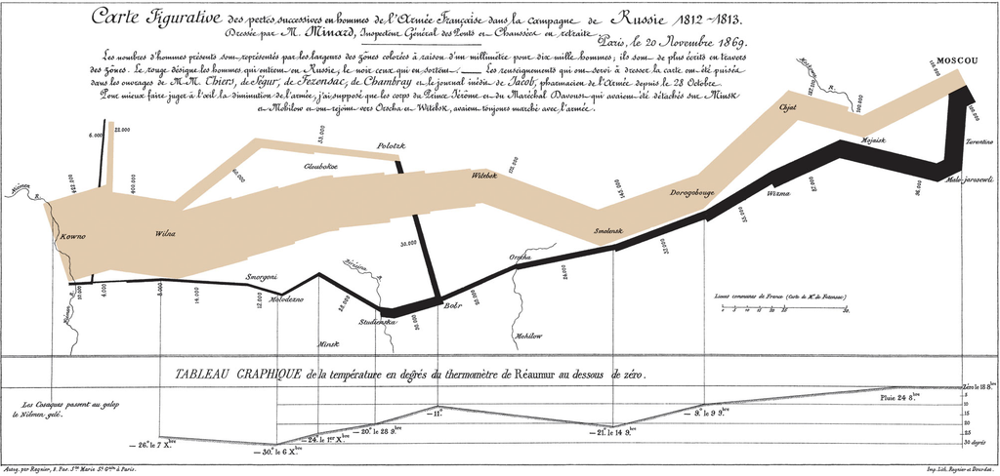
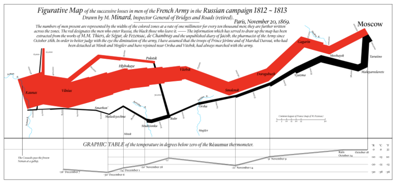

Karl Ho
School of Economic, Political and Policy Sciences
University of Texas at Dallas
Data Literacy
Understand data theory
Manage data
Analyze data
Data Skills
Programming
Tools

Multibeam sonar backscatter data draped on bathymetry off Santa Monica Calif. Yellow is high backscatter. Santa Monica sewer pipe and diffuser is visible in upper part of image (y-shaped feature). Red-brown dots represent color-coded fish abundance as determined from trawl data.
Source: https://tinyurl.com/ydhqtr8f

Source: Chris Adolph, also Johnson, R.R. and Kuby, P.J., 2011. Elementary statistics. Cengage Learning.
Source: Edward R. Tufte. 2001. The Visual Display of Quantitative Information. Graphics Press. 2nd ed.

Source: https://en.wikipedia.org/wiki/Charles_Joseph_Minard

Charles Joseph Minard, in mapping Napoleon's march on Moscow
Source: https://en.wikipedia.org/wiki/Charles_Joseph_Minard
How much information?
1. Latitude of army & features (Y-coordinate) . 2. Longitude of army & features (X-coordinate)
3. Size of army (width of line, numerals) . 4. Advance vs. Retreat color of line
5. Division of army splitting of line 6. Temperature linked lineplot
7. Time linked lineplot
Source: https://en.wikipedia.org/wiki/Charles_Joseph_Minard
